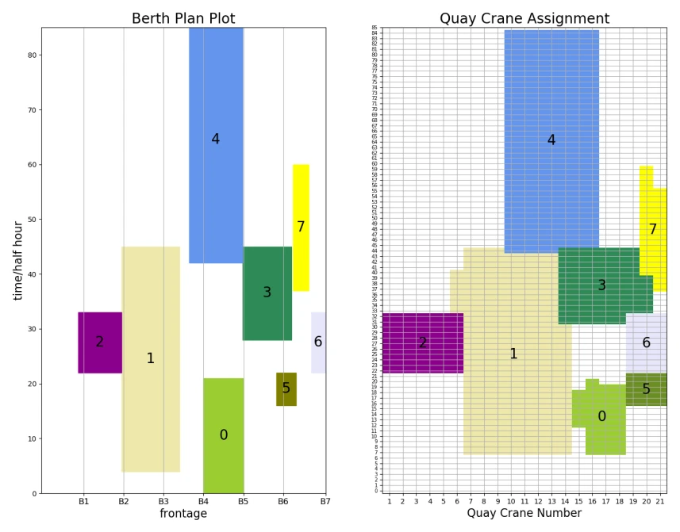

01Challenge
At Shanghai’s automated Yangshan Port Phase IV terminal, berth and quay-crane plans decide how long vessels stay at berth and how efficiently the whole terminal runs.
Shanghai Jiao Tong University · 2021
School of Mechanical Engineering · Shanghai Jiao Tong University
At Shanghai’s automated Yangshan Port Phase IV terminal, berth and quay-crane plans decide how long vessels stay at berth and how efficiently the whole terminal runs.
Plans covered short time spans, allocated berths and quay cranes separately and were made by hand. Solving the joint problem exactly also takes too long at realistic sizes: Gurobi needed about 11 days for an instance with 22 vessels.
